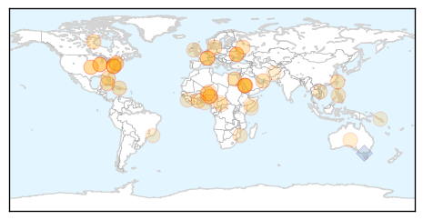
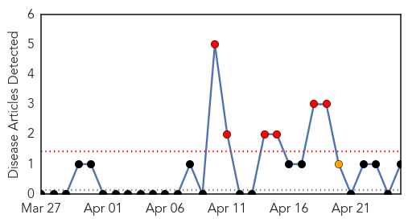

Unknown
30-Day Web Trend
0 alerts, 0 warnings

30-Day Twitter Trend
1 alerts, 0 warnings

Article Locations
Article Confidences

Top Articles:
- 0.998
- Saudi Arabia says MERS virus cases top 300, 5 more die
- 0.995
- Saudi Arabia says MERS virus cases top 300, 5 more die
- 0.948
- Experts cast doubt on Saudi push for Middle East virus vaccine
- 0.935
- Polio Hits Equatorial Guinea, Threatens Central Africa
- 0.917
- Chicago Tribune
- 0.917
- Chicago Tribune
- 0.917
- Chicago Tribune
- 0.917
- Chicago Tribune
- 0.917
- Chicago Tribune
- 0.878
- Chlamydia, gonorrhea and syphilis up in Illinois: Health Department
- 0.866
- Bomb search of Norwegian plane yields nothing
- 0.866
- Russia tells Germany Ukraine must not use army in southeast
- 0.866
- French Ecology, Sustainable Development and Energy Minister Segolene Royal attends a news conference in Paris
- 0.866
- French Ecology, Sustainable Development and Energy Minister Royal arrives for a news conference in Paris
- 0.866
- Ukraine says Russian troops came close to border
- 0.866
- Kiev will face justice for "bloody crime" in eastern Ukraine
- 0.866
- Russia's Lavrov accuses Washington of distorting Geneva accord on Ukraine
- 0.861
- MERS death toll hits 87 in Saudi Arabia, as infection rate rises
- 0.845
- Health Alert: 8 out of 10 men have HPV
- 0.829
- Health Canada Endorsed Important Safety Information on BENLYSTA(TM) (belimumab)
- 0.825
- Drought worsens food crisis in poverty-stricken Haiti
- 0.807
- Taiwan confirms 4th imported H7N9 case
- 0.680
- Trial Malaria Chemoprevention Protects Children
- 0.673
- The Westside StoryThe Westside Story
- 0.656
- Lyme disease is widespread in Onondaga County, but exact numbers are unknown
- 0.648
- Trial: Malaria Chemoprevention Protects Children
- 0.644
- Injecting hope into the fight against malaria
- 0.636
- Need for malaria vaccine grows as climate change threatens disease spread
- 0.619
- RCSI Malaria vaccine undergoes first human trial
- 0.608
- World Malaria Day highlights continued efforts to end disease
- 0.607
- "Not a Miracle Cure," But Seasonal Malaria Chemoprevention Having Strong Impact in Niger - Niger
- 0.601
- Nasty bite marred visit to Mozambique
- 0.581
- Changes in Disease Control Amid Burma’s Political Transition
- 0.563
- World Malaria Day: WHO stresses need to fight malaria now more than ever - World
- 0.545
- Niger: Seasonal Malaria Chemoprevention - “It’s not a miracle cure, but it is an effective preventative strategy”
- 0.544
- domain-b.com : Greater investment needed to check malaria: WHO
- 0.536
- Scientists Decode Genome of Deadly Tsetse Fly
- 0.536
- Brazil investigates possible mad cow case
- 0.530
- How analytics are changing health care -- FCW
- 0.523
- SOMALIA: Water shortages claim the lives of 11 people in Hiran
- 0.521
- Acute Water Shortage causes death of 11 people in Central Somalia • Horseed
- 0.518
- SANOFI observed world malaria day
- 0.516
- Brazil investigating potential case of atypical mad cow disease in Matto Grosso — MercoPress
- 0.514
- This week in health: World Malaria Day, food poisoning and more
- 0.512
- Solomon Islands Flash Floods - Health Situation Report No. 4 - Solomon Islands
- 0.507
- Brazil investigates possible mad cow case
- 0.506
- Three times more children treated for severe acute malnutrition in Bangui hospital than this time last year - Central African Republic
- 0.502
- UN Scales Up Aid Operations as Rainy Season Grips Central African Republic
Top Tweets:
- 0.729
- Flu Fact Friday: There are three categories of the flu named type A B and C.
Mold/Fungal
30-Day Web Trend
6 alerts, 1 warnings

30-Day Twitter Trend
0 alerts, 0 warnings

Article Locations
Article Confidences

Top Articles:
Top Tweets:
-
No tweets found for Apr 25, 2014